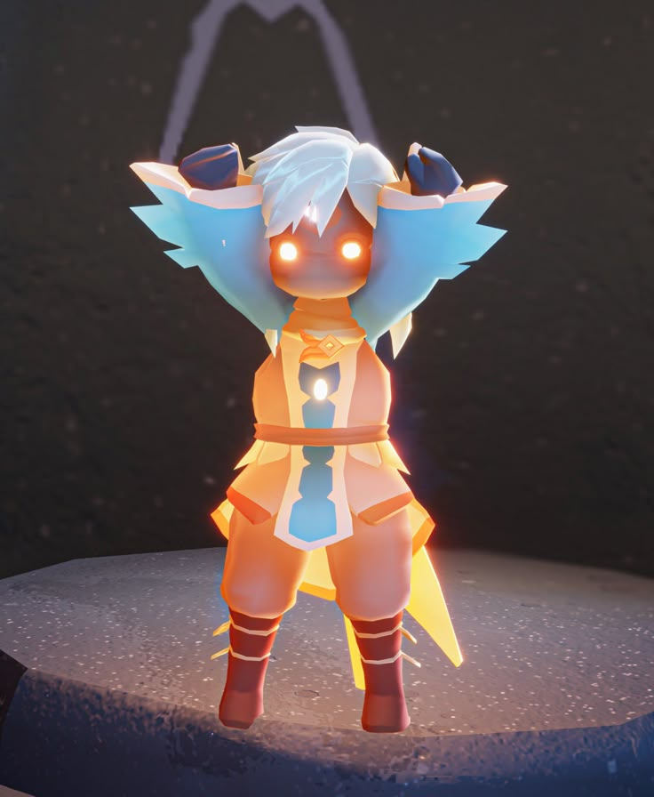

HOME
JOGABILIDADE
CURIOSIDADES
MUSICAS DO JOGO
O mundo de Sky: Filhos da Luz permite que o jogador explore um reino baseado em fantasia, com a liberdade para aventura em mundo aberto e uma capa mágica que concede aos jogadores a capacidade de voar. Há sete Reinos exclusivos para visitar, e cada um deles tem como tema um estágio diferente da vida. Além desses Reinos, há o Lar, que funciona como um centro. Ao longo do jogo, o jogador encontrará Espíritos que podem ser usados para desbloquear Cosméticos e Expressões em troca de Moeda no jogo. O jogador também pode encontrar Filhos da Luz, que concedem Luzes Aladas - um item colecionável usado para aumentar a Energia da Capa, permitindo um voo mais alto e longo.
Além disso, o jogo se concentra muito na mecânica social. O Reino de Sky está repleto de outros jogadores de todo o mundo, que você pode interagir e fazer amizade. Posteriormente, os jogadores podem desbloquear novas habilidades, como o Bate-Papo, que permite relacionamentos duradouros e conexões mais profundas